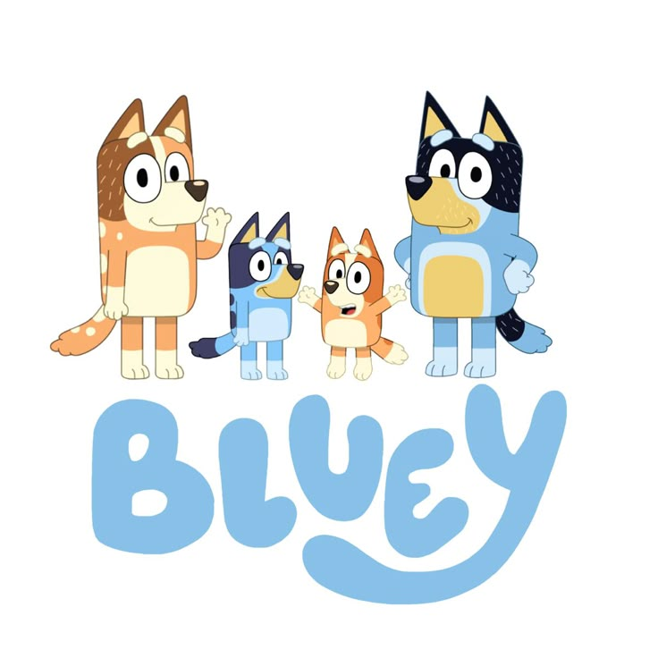
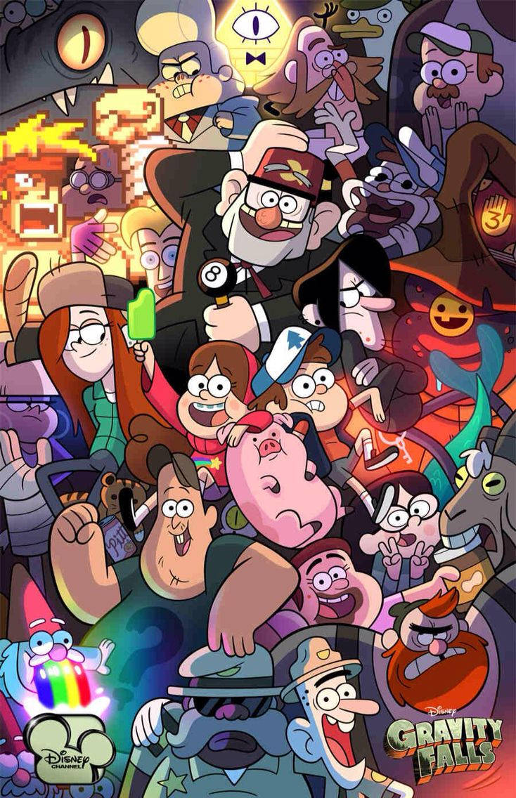
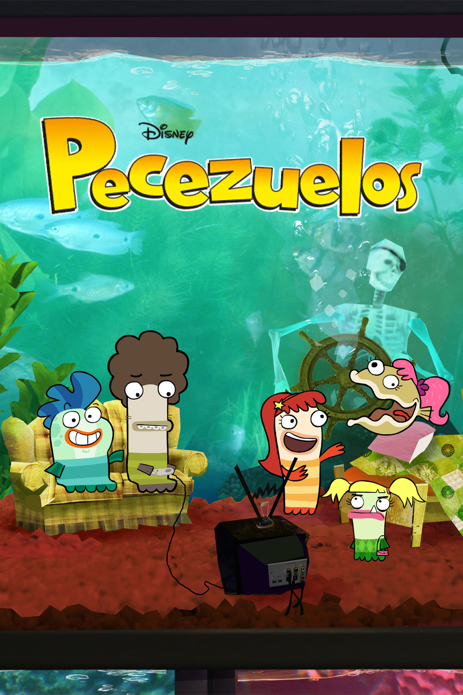

Series Favoritas que Recomiendo al 100
- Bluey 
- Creador:Joe Brumm
- Año de lanzamiento: 2018
- Genero:Animación, infantil, comedia familiar
- Duración: Episodios de aprox. 7 minutos
- Idioma:Inglés (original)
- Gravity Falls 
- Creador:Alex Hirsch
- Año de lanzamiento: 2012
- Genero:Animación, misterio, comedia, fantasía
- Duración: Episodios de aprox. 22 minutos
- Idioma:Inglés (original)
- Las aventuras de Jimmy Neutrón
- Creador:John A. Davis (película), Steve Oedekerk (serie)
- Año de lanzamiento: 2002
- Genero:Animación, ciencia ficción, comedia
- Duración: Episodios de aprox. 22 minutos
- Idioma:Inglés (original)
- Pecezuelos 
- Creador:Noah Z. Jones
- Año de lanzamiento: 2010
- Genero:Animación, comedia, escolar
- Duración: Episodios de aprox. 22 minutos
- Idioma:Inglés (original)
Sinopsis: Bluey es una cachorrita de seis años llena de imaginación. Junto con su hermana Bingo y sus padres, crea juegos creativos que enseñan valores como la empatía, la familia y la creatividad, mezclando humor y momentos tiernos.
Trailer:
Soundtrack:
Sinopsis: Los gemelos Dipper y Mabel Pines pasan el verano con su tío Stan en Gravity Falls, un pueblo lleno de criaturas extrañas, secretos y sucesos paranormales. Juntos intentan descifrar los misterios que rodean el lugar.
Trailer:
Soundtrack:

Sinopsis: Jimmy Neutrón es un niño superdotado que crea inventos increíbles… que casi siempre terminan saliendo mal. Junto a sus amigos Carl y Sheen vive aventuras caóticas tratando de arreglar los problemas que él mismo provoca.
Trailer:
Soundtrack:
Sinopsis: Milo, Bea y Oscar son tres amigos peces que asisten a la escuela dentro de un acuario. Sus vidas están llenas de humor, drama adolescente y situaciones absurdas propias del mundo submarino en el que viven.